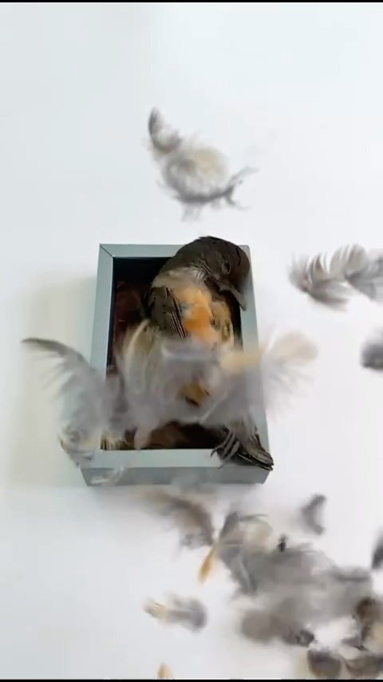
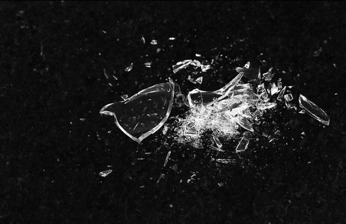
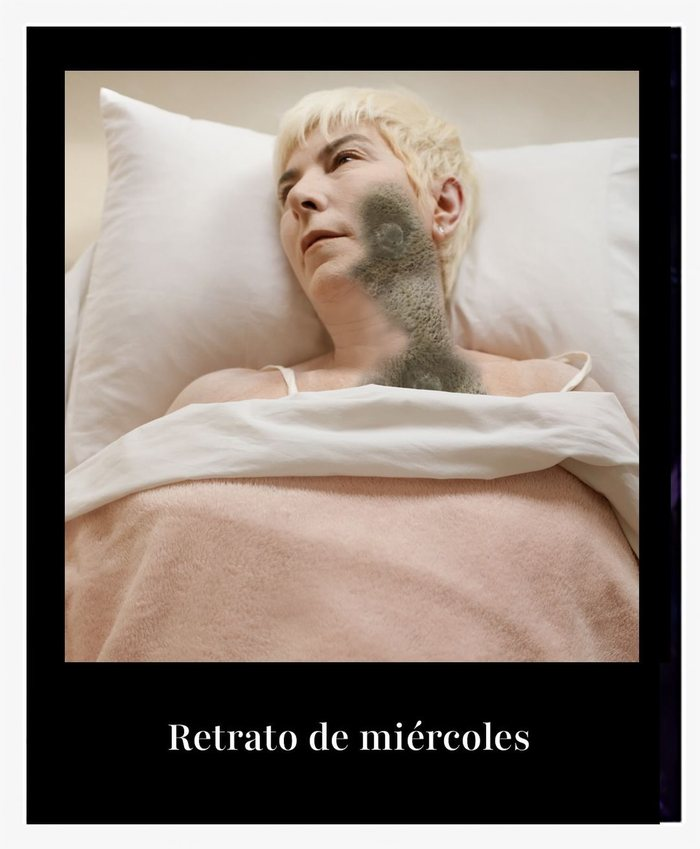

01 / Series
Construyo imágenes, situaciones e imaginarios.
Víveres
Autorretratos intervenidos: el cuerpo como alimento. Ganadora en FAPA 2021 y Medalla de Plata en TIFA 2020.
Ver la serie completa ↗Necrópolis
Una serie que empecé en 2014 tras la muerte repentina de un joven de mi familia. Desde ahí mi mirada se volvió más sensible a la presencia y la ausencia de vida en las criaturas que aparecen en lo cotidiano. Exhibida en Pinta BAphoto 2026.
Ver en Instagram ↗

Retrato de miércoles
Autorretratos de un miércoles cualquiera: humor, confinamiento y memento mori.

Poptitud · Circus · Fashion & Portraits
Collage e intervención digital, el circo como escenario y retratos de estudio con una puesta casi teatral. Primer Premio de la Fundación Julia Margaret Cameron (Reino Unido, 2019) por «Poptitud».
Ver todas las series ↗